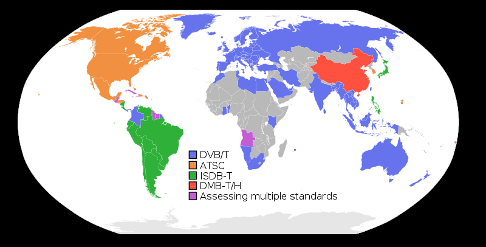
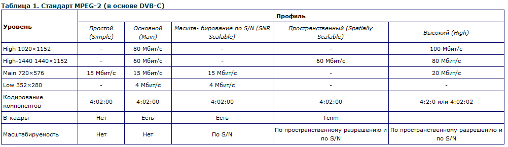
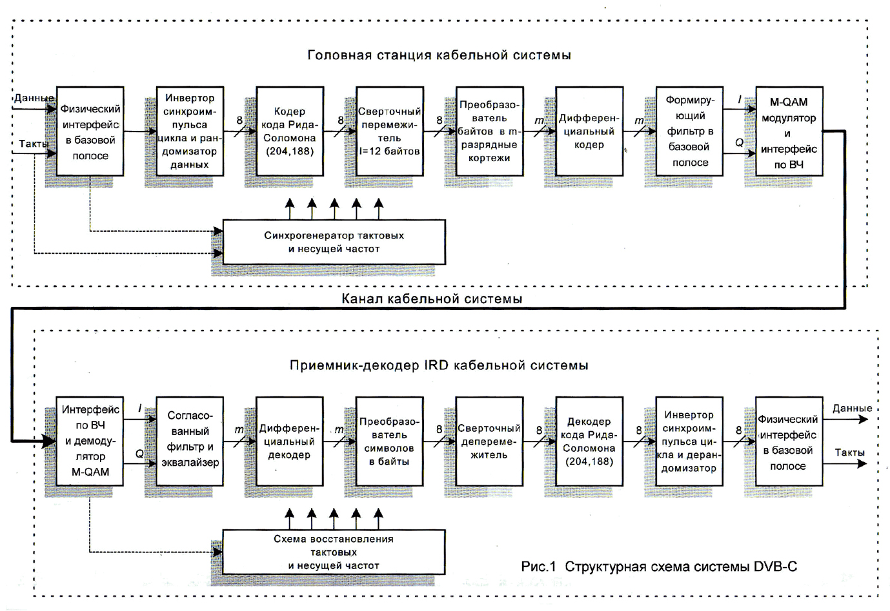
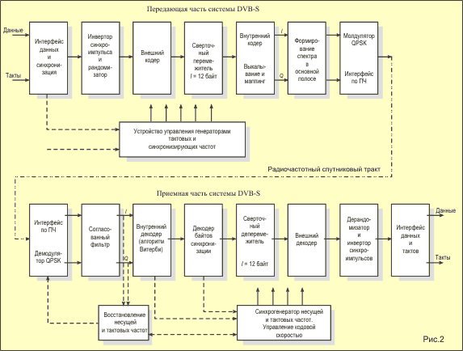

Немного о cтандартах цифрового телевидения

Цифровое телевидение с каждым годом становится все более популярным. Все больше людей, как в Украине, так и в мире переходят на просмотр цифрового спутникового телевидения.
И это не удивительно, ведь цифровые технологии развиваются, а ускоряет
их развитие неизменно повышающийся спрос. Главным преимуществом и
достоинством цифрового телевидения является качество, четкость и
разрешение изображения телепрограмм в цифровом формате гораздо выше, чем
у телепрограмм аналогового телевидения.
Важно знать, что для передачи сигнала (вещания) цифрового телевидения в мире существует несколько основных стандартов:
• DVB — стандарт цифрового телевидения в Европе.
• ATSC — стандарт цифрового телевидения США и Канады.
• ISDB — стандарт цифрового телевидения Японии.
Мы
же в нашей статье рассмотрим основные стандарты вещания спутникового
телевидения, распространенные на территории всей Западной и Восточной
Европы, России, Индии, Австралии, Новой Зеландии, Колумбии, Египта и
некоторых стран Африки, Азии и Южной Америки.

• DVB-C (cable);
• DVB-S (satelit);
• DVB-T (terrestrial).
Стоит
сказать, что каждая страна, переходящая на трансляцию цифрового
телевидения самостоятельно выбирает стандарт вещания цифрового
телевидения.
Рассмотрим более подробно эти стандарты вещания цифрового телевидения:
•
DVB-C (cable). Это стандарт цифрового телевизионного вещания,
осуществляемого по кабелю. Однако, какие достоинства и особенности
стандартов существуют? Какие преимущества появляются при переходе на
цифровые технологии, в частности при внедрении стандарта DVB-C:
o
Экономия частотного ресурса, позволяющая в одном физическом
канале разместить от 4 до 8 телевизионных программ, а значит для
трансляции 60-ти программ (!) необходимо всего 10 каналов. Надо сказать,
что такая экономия существенно ощутима при внедрении на старых сетях с
пропускной способностью от 250 МГц до 300 МГц.
o
Повышение качества транслируемых программ. Благодаря переходу на
цифровое телевидение исключается большинство шумов, фоновых помех,
наводимых сигналов, интермодуляционных искажений и т.д., влияющих на
снижение качества изображения. Цифровые сигналы, вещаемые по стандарту
DVB-C не зависят от протяженности магистрали и сохраняют качество
трансляции.
o Существенное увеличение зоны
обслуживания СКТ (в десять и более раз). Такая возможность появляется
благодаря пониженному шумовому порогу (менее 36dB). Как показывают
расчеты и практика, увеличение зоны охвата максимально эффективно также
на устаревших сетях с пропускной способностью от 250 МГц до 300 МГц.
o
Возможность эффективного и качественного кодирования пакетов
телепрограмм. Внедрение и использование DVB-C позволяет облегчить
использование фильтров пакетирования благодаря существенному снижению
физических каналов, а также появлению частотных пробелов, необходимых
как раз при использовании фильтров пакетирования.

Структура работы системы DVB-C

• DVB-S (satelit). Это стандарт цифрового телевизионного вещания, осуществляемого со спутника. Вещание с использованием спутника было и остается наиболее экономным, быстрым и надежным способом передачи телевидения высокого качества и четкости. Более подробно о технологии вещания спутникового телевидения Вы можете прочесть в нашей статье про спутниковое телевидение.
Структура работы системы DVB-S

• DVB-T (terrestrial - наземный). Рассмотрим
подробнее данный стандарт вещания цифрового телевидения в связи с
выбором этого стандарта для украинского телевещания. Стандарт DVB-T
характеризуется высоким разрешением (625 строк), а также использованием
чересстрочной разверстки. Надо отметить, что частота полукадров, при
этом, составляет 50Гц. Благодаря своим возможностям стандарт DVB-T
способен обеспечить увеличенное в два раза (в сравнении с базовым)
разрешение, как по вертикали, так и по горизонтали. Также появляется
возможность передачи изображения с особым соотношением 16:9. Что
касается звука, то упомянутый формат поддерживает высококачественный
звук формата Dolby AC-3.
Стоит отметить различия между аналоговым и
цифровым сигналом внутри одного стандарта DVB-T. Так, для аналогового
телевидения самой важной характеристикой для излучаемого сигнала
является пиковая мощность, измеренная в полосе 120кГц (не совпадает с
полосой канала 8МГц, так как в широкой полосе сигнал аналогового
телевидения меняется). Вследствие чего, максимальная средняя мощность
аналогового телевизионного сигнала будет достигнута тогда, когда
передается черное поле. Средняя мощность такого сигнала составляется
порядка 20-30% от пиковой мощности.
В цифровом же телевидении
излучаемый сигнал характеризуется как раз средней мощностью, а разность
между средней и пиковой мощностью сигнала цифрового телевидения
составляет лишь небольшую разницу. Поэтому, производя сравнение
мощностей цифрового телевидения и аналогового, всегда следует помнить,
что сравнивать необходимо не одинаковые типы мощностей(!). Для более
простого сравнения можно использоваться деление мощности аналогового
передатчика на 5, после чего сравнивать со средней мощностью цифрового
передатчика. Это означает, что разница уровней между приемом аналоговым
TV (48-54 dB/мкв) и приемниками DVB-T (25-30 dB /мкв) как минимум в 100
раз (20dB). Следовательно, мощность передатчиков цифрового телевидения
может быть в 20-100 раз меньше, чем для аналогового телевидения.
Среди главных преимуществ стандарта цифрового телевидения DVB-T:
•
Использование более эффективных методов борьбы с переотражением,
которые основаны, главным образом, на применении быстрого преобразования
Фурье с введением защитных промежутков, а также специальных методов
модуляции. Подобные возможности позволяют создавать системы эфирного
цифрового телевидения, которые можно подобрать конкретно для каждого
населенного пункта.
• Устойчивость к многократным переотражениям в случае равенства отраженного и основного сигналов.
•
Возможность прямого приема телевизионных программ даже в случае
наложения зон уверенного приема сразу нескольких, работающих на одной
частоте, телецентров.
• Использование продвинутых
одночастотных сетей, избавляя от необходимости строительства высоких
антенных вышек, и, при этом, уменьшая число передатчиков в 6-7 раз, что,
в свою очередь, позволяет снизить мощность передатчика на целых 30%.
Стоит отметить, что синхронизация телецентров осуществляется по эталону
частот любого из доступных на территории спутников.
• Защищенность к аналоговому телевидению, благодаря которой
отсутствует необходимость в отказе от существующих программ аналогового
телевидения.
• Прекрасная адаптация ширины полосы частот стандарта под любую страну, в которой используется.
• Высокая скорость передачи данных от 5 до 32 Мбит/с.
• Поддержка Dolby AC3, HDTV, ATSC.
• Возможность осуществлять прием даже в движущемся транспорте на скорости до 300 км/ч (!), даже в туннеле(!).
• Хорошая адаптация к условиям плотной городской застройки.
• Реальное существенное снижение мощности передатчика (возможно только в стандарте DVB-T).
Неоднократные сравнительные испытания и анализ разных стандартов передачи сигнала цифрового телевидения показал непревзойденные преимущества стандарта DVB-T.
Ознакомиться
с достоинствами и техническими особенностями цифрового телевидения, в
том числе в сравнении с налоговым телевидением, можно в
нашей статье «Цифровое телевидение».